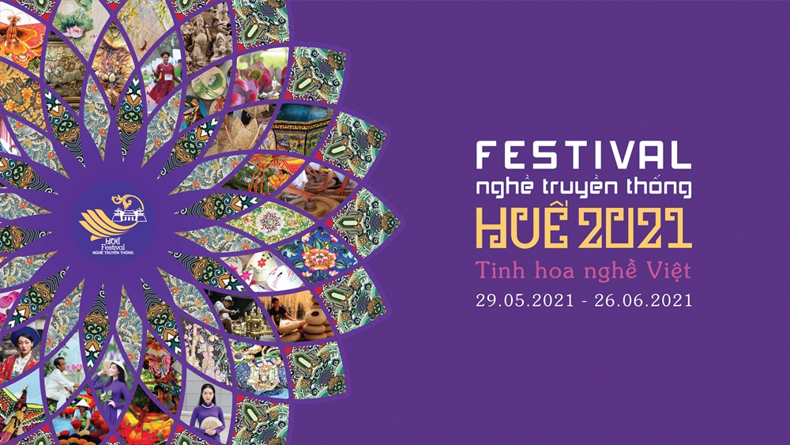
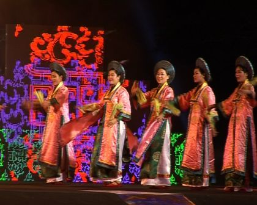

ABOUT FESTIVAL
History of Hue Festival
Starting from the initial results of the 1992 Vietnam - France Festival between Hue city and Codev Viet Phap, Thua Thien Hue province soon conceived the idea of organizing a festival with a larger scale and higher quality. This idea has been agreed by many ministries, central branches and the Embassy of the French Republic in Vietnam. In October 1998, the Government decided to allow Thua Thien Hue province to coordinate with the French Embassy in Vietnam to organize Hue Festival 2000.
Immediately after that, groups of Vietnamese and French technical experts coordinated to urgently prepare in the direction of organizing Hue Festival 2000, which is a major cultural event of Vietnam, both nationally and internationally. attracting the participation of typical cultural regions in Vietnam and accessing contemporary French art, linking cultural exchange expansion with tourism economic development, gradually absorbing International Festival technology Building Hue deserves to be the Festival city of Vietnam.
From the end of 1998 to the beginning of 1999 - the time to prepare to enter the 21st century and the new millennium, the People's Committee of Thua Thien Hue province with the coordination and support of the French Government and the Embassy of the French Republic in Vietnam. , the direct support of the Ministry of Culture and Information, the Vietnam National Administration of Tourism, the Ministry of Foreign Affairs and other ministries and branches have officially requested the Government to allow Thua Thien Hue province to coordinate with the French Embassy in Vietnam to organize Hue Festival 2000 - the first national and international festival of culture, art and tourism in Vietnam.
Hue Festival 2000 took place 12 days and nights, with the participation of more than 30 art units from Vietnam and France with over 1,000 professional and non-professional artists and actors, attracting more than 410,000 turns of festival attendees. in which there are 41,000 tourists, with 6000 international visitors... This is really a national and international cultural, art and tourism festival, a general rehearsal of exchange activities. political, diplomatic, economic, cultural, promoting the revival of Thua Thien Hue province after the historic flood in 1999, promoting the comparative advantage of Thua Thien Hue province in the field of culture - travel.
Hue Festival 2002 continues to develop the theme 'Discovering the living art of Hue ancient capital' along with expanding international exchanges, taking place 12 days and nights and 1 month before the opening day, kicked off by the Sculpture Camp International engraving 'Impressive Hue - Vietnam' with the participation of 33 typical art troupes from France, China, Japan, Korea, Indonesia, Thailand, Laos, Cambodia and other domestic groups including 1554 artists, actors, technicians, attracting over 1 million attendees, 75,000 tourists, including 18,000 international arrivals (increasing 3 times compared to Hue Festival 2000). Hue Festival 2002 has created a great resonance, of national and international stature, creating a premise to build Hue into a festival city of Vietnam.
Hue Festival 2004 with the theme 'Cultural heritage with integration and development' took place in 9 days and nights associated with 1 month of the start of the International Sculpture Creation Camp 'Hue Impressionism - Vietnam', Sculpture Camp Folklore, Hue Poetry Festival and many preliminaries gathered 15 foreign art troupes from France, China, Argentina, Australia, India, Germany and the US; 25 domestic art troupes with 1,300 professional actors, nearly 2,000 amateur actors and technical staff from many forces participated in the festival, attracting 1.2 million attendees and 101,950 visitors tourism, including 11,950 international visitors. This is a cultural and tourism festival of national and international scale, introducing the unique artistic values of Vietnam, Hue and many countries around the world, as well as an opportunity to honor Nha Nhac. Hue Royal Palace - a masterpiece of the intangible and oral culture of mankind that has just been recognized by UNESCO, continues to create a driving force to promote economic, tourism and cultural development, affirming the advantages of a Festival city of Vietnam.
Hue Festival 2006 with the theme '700 years of Thuan Hoa - Phu Xuan - Thua Thien Hue, Cultural Heritage with Integration and Development' - gathered 1,440 artists and actors from 22 domestic art troupes (1171 actors). ) and 22 international art troupes (269 actors) from countries: France, China, Russia, Korea, Japan, Thailand, England, Argentina, Indonesia, Australia. Hue Festival 2006 continues to promote the results and experiences of the previous Festivals, has achieved the set requirements, attracted 1.5 million people to attend Hue Festival activities. One month before the opening ceremony and 9 consecutive days and nights from June 3 to June 11, 2006, Hue Festival 2006 brought to the public 138 performances, over 40 cultural activities and community festivals. The program has been evaluated by the public as a national, modern, monumental, attractive and safe festival, demonstrating the level of a professional and international festival of Vietnam. In particular, Hue Festival 2006 has continued to awaken and arouse Vietnamese cultural values, Hue culture, and effectively market to friends in five continents the image of Hue ancient capital, the Festival city of Vietnam. Male.
FESTIVAL TRADITIONAL TRADITIONAL FESTIVAL IN HUE 2021: BRING TRADITIONAL TRADITIONAL PRODUCTS CLOTER
Since the first Hue Traditional Craft Festival took place in 2005 until now, through 8 times of organization, Hue Traditional Craft Festival still retains the core value of a traditional Festval, which is to introduce what is quintessential. The most beautiful flower of Vietnamese traditional crafts, contributing to honoring the talents of traditional artisans not only in Hue but also in all regions of the country.
Only one month left, Hue Traditional Craft Festival 2021 will take place. According to information from the Organizing Committee, up to now, Hue Traditional Craft Festival 2021 has attracted 74 participating craft establishments and villages, of which 18 are outside the province, and 56 are within the province. craft, craft village.
Currently, traditional craft establishments and villages are speeding up progress, busy producing goods, improving designs and product quality to meet the needs of tourists, contributing to the richness and diversity of products. festive season. Products are introduced, displayed at the exhibition and demonstration space of rich and diverse traditional handicraft products such as: Phap lam; lacquer, carpentry, mosaic; traditional textiles and garments; fine art ceramics; jewellery; bamboo and rattan, conical hats, paintings, confetti...
The 9th Hue Traditional Craft Festival-2021 will take place in the center of Hue city from May 29 to June 26, 2021, promising to attract the participation of a large number of people and visitors with many programs, fascinating event. Participating in this Hue Traditional Craft Festival this time, the talents of the artisans are widely known, and the product brands are enhanced, thereby creating a strong driving force for the revival and development of the industry. many traditional craft villages. The effect that Hue traditional craft festivals bring not only does not stop at preserving, preserving and developing traditional crafts and honoring artisans, but it is bigger to bring Hue craft village products closer to tourists. domestic and international guests.